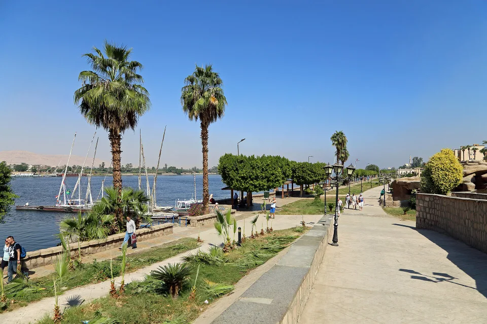
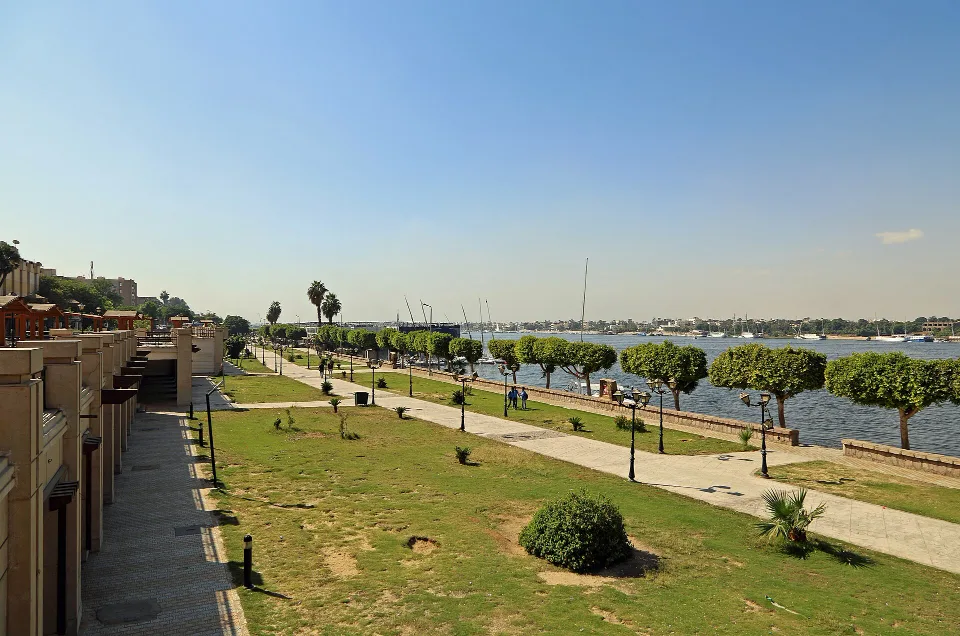

Badge00 — OverviewOverview
Discover Upper Egypt
Design System & UI Component Library
Editability legend
🟢 Content Editable⚫ Design System Locked🔵 Developer Configuration
Content is editable only when exposed by CMS configuration. The CMS field set is not yet confirmed; §06 marks each content item that still needs confirmation. Start with the Component Inventory to find any component.
01 — FoundationsFoundations
Colors
Core brand
Rust
#a53e1aprimary actions, links, active states, eyebrows, focus ring (40%)Rust deep
#8a3213hover of every rust elementInk
#0b2230headings, selected chips, dark accentsSand
#dcc9a8image fallback, warm neutralNeutral
Cocoa
#2b1d0edark cards; base of all neutral shadowsCharcoal
#1f1a14toast, tooltip, social buttonsHairline
#e6e2d8dividersWhite
#ffffffheader, fieldsets, chips, rows, popupsBackground
Parchment
#f1e4d2home page bodyPaper
#fbf7efinner pages, cards, footerSection cream
#f7f1e6alternating home sectionsDrawer
#f4f1eaaccessibility drawer, metadata chipsText
Heading
#0b223015.3:1 on paperBody
#24312f12.6:1Muted
#57534esummaries, metadata, hints · 7.1:1Cream on dark
#f6ead8titles on dark heroesSemantic
Error
#a52a1aborder + message; banner #7a1f12 on 8% tintSuccess
#2f6f5everified border; banner #1f4a3f on 8% tintFocus
rgba(165,62,26,.4)3px outline; white on rust / darkExtended / functional palette
Category tints and map markers
Heritage green
#2f6f5etour marker, link-resource iconNile blue
#345c70stay marker, organisation tile, ink story cardOlive
#4b5a33olive image badge (story card #687650)Clay
#9a4b2cdefault image badge (story card #b0684a)Amber
#b8741afood marker (weather icon #d98a2b)Bark
#6b4a2fworkshop / organisation markerClay tint
#f6d5c9 / #7a2f14pillar tagOlive tint
#dbe5c6 / #2f4118pillar tagInk tint
#cfe4ee / #143a4apillar tagNav ink
#2a2a28header links, footer headingsChip border
#e1ddd0metadata chipsForm paper
#f3e3c9+ papyrus texture 30%Ink-alpha borders
rgba(43,29,14,.10–.20).10 cards · .12 rows · .16 chips · .20 inputsHigh-contrast rust
#7a2400replaces rust in the contrast modeTokens
| Token | Value |
|---|---|
--rust · --rust-deep | #a53e1a · #8a3213 |
--ink · --body · --muted · --nav-ink | #0b2230 · #24312f · #57534e · #2a2a28 |
--paper | #f1e4d2 (home) · #fbf7ef on inner pages |
--hair · --card-border · --drawer-bg · --cream | #e6e2d8 · #e1ddd0 · #f4f1ea · #f6ead8 |
--pill / --pill-ink | scoped per tag modifier |
html.a11y-contrast | paper #fff · ink/body/muted #000 · rust #7a2400 · borders #000 |
Typography
| Role | Arabic | Latin | Weights |
|---|---|---|---|
| Display / headings | Thmanyah Serif Display | IBM Plex Serif | 500, 700 |
| Body / UI | IBM Plex Sans Arabic | IBM Plex Sans | 400, 500, 600, 700 |
DisplayHome hero headline
42–96px · 700 · lh 0.94–1.02
42–96px · 700 · lh 0.94–1.02
Discover Upper Egypt
اكتشف صعيد مصر
H1Page and home section titles
32–56px · 700 · lh 1.15
32–56px · 700 · lh 1.15
Upcoming events
الفعاليات القادمة
H2Inner section headings
26–38px · 700 · lh 1.3
26–38px · 700 · lh 1.3
Practical information
معلومات عملية
H3Card titles, form legends
20–24px · 700 · lh 1.3
20–24px · 700 · lh 1.3
Hot-air balloon rides
رحلات البالون
H4Row titles
16–18px · 700 · lh 1.3
16–18px · 700 · lh 1.3
Luxor Heritage Association
جمعية تراث الأقصر
Body LargeLedes, prose, detail body
16–18px · 400 · lh 1.7–1.85
16–18px · 400 · lh 1.7–1.85
Tea and stories with the people of Luxor.
شاي وحكايات مع أهل الأقصر.
BodyCard summaries, labels, navigation
15px (nav 17px) · 400 · lh 1.7
15px (nav 17px) · 400 · lh 1.7
A felucca ride on the Nile at sunset.
رحلة فلوكة في النيل وقت الغروب.
Body SmallMetadata, badges, checkbox text
13.5px · 400–700 · lh 1.5
13.5px · 400–700 · lh 1.5
About two hours · Aswan
نحو ساعتين · أسوان
LabelCard eyebrows, tags
12.5px (Latin 11.5 uppercase) · 600–700
12.5px (Latin 11.5 uppercase) · 600–700
Hidden gems
جواهر مخفية
CaptionHints, errors, popup summaries
13px · 400 (errors 700) · lh 1.5
13px · 400 (errors 700) · lh 1.5
We reply within five working days.
نرد خلال خمسة أيام عمل.
Arabic text never receives letter-spacing, uppercase or tatweel stretching. Buttons: 15px/700 (compact 13.5px).
Developer details · tokens and clamp() values
| Role | Token / selector | Value |
|---|---|---|
| Display | --fs-h1 · .hero .headline | clamp(42px,6vw,84px) · hero clamp(44px, calc(12px + 5vw), 96px); Latin clamp(36px, calc(8px + 3.9vw), 76px) |
| H1 | --fs-h2 · .pg-title · --fs-h2-hero | clamp(32px,4.4vw,56px) · clamp(32px,3.6vw,52px) · clamp(38px,5.6vw,76px) |
| H2 | .lx-h · .xh-cap-title | clamp(26px,2.7vw,38px) · hero caption clamp(44px,6vw,92px) |
| H3 / H3 large | --fs-h3 · --fs-h3-lg | clamp(20px,1.7vw,24px) · clamp(24px,2vw,28px) |
| Body Large / Body / Small / Label | --fs-body-lg --fs-body --fs-small --fs-label | clamp(16px,1.25vw,18px) · 15px · 13.5px · 12.5px |
| Button / eyebrow | --fs-btn --fs-eyebrow | 15px · 15px (Latin 13px, .2em, uppercase) |
| Line heights | --lh-tight --lh-heading --lh-body | 1.15 · 1.3 · 1.7 |
| Latin switch | html.lang-latin | body → IBM Plex Sans; .display → IBM Plex Serif, letter-spacing −.02em |
| Readable mode | html.a11y-readable | IBM Plex Sans everywhere; --a11y-scale 0.9–1.4 on html font-size |
| Fonts | fonts/sub, fonts/ibm | self-hosted WOFF2, two Arabic weights preloaded, no external font links |
Spacing
8
12
16
24
32
48
64
96
Section112 top / 96 bottom · mobile 64 / 64
Card padding24 · inner gap 8
Grid gap32 row / 24 column · mobile 24
Desktop gutter24
Mobile gutter16
Buttonpadding 24 · icon gap 12
Formfield 6 · fieldset 16 · form 24
Developer details · tokens
--s-1 8 · --s-2 12 · --s-3 16 · --s-4 24 · --s-5 32 · --s-6 48 · --s-7 64 · --s-8 96. Section rhythm --sec-pt: calc(var(--s-8) + var(--s-3)), --sec-pb: var(--s-8), both 64px at ≤767. Listing sections 64 / 96. --grid-gap: var(--s-5). Gutter via .wrap{padding-inline:var(--s-3)}, --s-4 from 640.
Grid
640sm
768md
1024lg
1280xl
Max width1200 · listings and framed hero 1400 · footer 1180 · forms 720 · prose 72ch
Desktop3 columns (4 for event / food rows) · split 1fr + 380 (420 ≥1280)
Tablet2 columns (auto-fill 320) · single column splits
Mobile1 column · 4-card rows become horizontal snap
≥1024 · 3 columns
640–1023 · 2 columns
<640 · 1 column
Split layouts ≥1024 · content + sidebar / map
Developer details · containers and breakpoints
.wrap max 1200, padding-inline 16 → 24 (≥640). #exList .wrap and .ds-wrap 1400 (min(1400px, 100% − 32px)). .footer-grid 1180. .f-form 720, .prose 72ch, .ep-flow 960. Grids: .ex-grid auto-fill minmax(320px,1fr) → 3 columns at ≥1024; .evl minmax(240px) → 4; .ds-grid 3 / 2 / 1; .paths-grid 1 / 2 / 3 with gap 48 at ≥1280. Splits: .dxl 1fr + 380 (420 ≥1280), .pg-grid 1fr + 360, .sk-split 1fr + 420 sticky, .mp-body 320 (420 ≥1100) + map. Secondary breakpoints still in code: 900, 1100, 1200, 520, 379, 359; new work uses only 640 / 768 / 1024 / 1280.
Radius
6
8
12
18
22
pill
6focus corners
8buttons, inputs, chips, map controls
12thumbnails, icon tiles, popups, menus
18cards, rows, fieldsets, sidebar, hero media
22feature cards, lead images, page frame
pillpills, round buttons, header bar
Developer details · tokens and exceptions
--radius-xs 6 · --radius-sm / --radius-btn 8 · --radius-md 12 · --radius-card 18 · --radius-card-lg 22 · --radius-full 999. Accepted exceptions: 20px (framed hero, planner panel), 16px (destination card media). Animated radii on expanding cards (44→30, 28→22) are states, not tokens.
Borders & shadows
none
cards at rest
cards at rest
subtle
header, menus
header, menus
card
feature cards
feature cards
elevated
dark cards, hover
dark cards, hover
cta
rust buttons
rust buttons
floating
popups, drawer
popups, drawer
Card1px ink 10% · hover rust 35%
Row / fieldset1px ink 12%
Chip / search1px ink 16% · hover rust
Input1.5px ink 20% · focus rust · error red
Outline button1.5px rust
Divider1px hairline
Developer details · exact values
| Shadow | Value |
|---|---|
| subtle | 0 1px 2px rgba(43,29,14,.06), 0 10px 30px −12px rgba(43,29,14,.35), 0 0 0 1px rgba(43,29,14,.04) |
| card | 0 2px 6px rgba(43,29,14,.06), 0 14px 32px rgba(43,29,14,.08) |
| elevated | 0 1px 2px rgba(43,29,14,.12), 0 18px 40px −20px rgba(43,29,14,.45) |
| cta | 0 1px 2px rgba(138,50,19,.18), 0 6px 16px −6px rgba(138,50,19,.45) |
| floating | 0 2px 6px rgba(43,29,14,.06), 0 18px 44px rgba(43,29,14,.14) |
| on-image badge | 0 4px 12px −4px rgba(0,0,0,.4) (only neutral black shadow) |
Borders: cards rgba(43,29,14,.10) · rows / fieldsets / popups .12 · chips / search / round buttons .16 · inputs 1.5px .20 · outline buttons 1.5px --rust (ghost: inset ring) · dividers --hair or rgba(43,29,14,.1) · focus 3px rgba(165,62,26,.4) offset 3 (2 in forms, white on rust/dark).
Iconography
FamilyPhosphor Icons, regular, filled paths. One family; no emoji
Sizes16 default · 14 in pills · 20 round buttons and markers · 24 drawer tiles · 32 page-head tile
Strokenone (filled glyphs), 256 grid
Colourinherits text colour: rust on white, white on rust / dark, muted in metadata
Activeexpressed by the parent (filled chip, pressed favourite → heart-fill)
Directionforward arrows mirror in LTR; external-link and down arrows never mirror
arrow-left
caret-right
caret-down
list
x
search
map-pin
compass
hand
fork-knife
bed
basket
bank
sailboat
balloon*
ferry*
clock
calendar
users
tag
heart
heart-fill
share
download
play
sliders
sun
cloud
wind
a11y
wheelchair
info
warning
check
envelope
facebook
instagram
linkedin
youtube
external
* custom glyphs drawn to the Phosphor grid.
Developer details · API and mirroring
130 glyphs in icons.js as window.ICONS; ICON(name, size, cls) returns <svg class="ic" width height viewBox="0 0 256 256" aria-hidden="true" focusable="false" fill="currentColor">. Custom glyphs in icons/custom/; icons/ui/caret-down.svg is used as a CSS mask for selects. Forward arrows: ICON('arrow-left', 16, 'fwd') with html[dir="ltr"] .fwd{transform:scaleX(-1)}; carets mirror per component rule.
02 — AtomsAtoms
Button
Content EditableLabel · URL
Design System LockedColour · Typography · Height · Padding · Radius · Shadow · Icon
Developer ConfigurationVariant per placement · Hover / focus / disabled · Arrow mirroring
Variants
States
Specifications
Height48 · compact 40–44 · text link 44 tap area
Type15/700 · secondary 15.5 · compact 13.5
Padding · gap24 · 12 (compact 18)
Radius8 · icon buttons pill
Primaryrust, white text, cta shadow · hover rust deep · active scale .98
Secondary1.5px rust outline · hover fills rust · ghost = inset ring
Textrust 15/700 · hover rust deep + 4px arrow nudge
Icon40 / 44 / 48 / 56 circle, white, hairline · hover rust · disabled .35
Favouritewhite 92% · pressed rust + heart-fill
On imagewhite focus ring, no tinted shadow
Used on: all pages.
Developer details
| Variant | Classes | Notes |
|---|---|---|
| Primary | .cta .card-cta .gem-cta .ev-cta .xa-cta .journey-btn .news-btn .lx-btn .dx-cta .pv-cta .sy-btn | normalised to --btn-h 48 / --fs-btn / --radius-btn; new code uses .dx-cta |
| Secondary / ghost | .st-cta .rv-cta .gems-cta · .dx-cta--ghost .pl-btn--ghost | ghost rule lives under .dxi-actions only (404 renders solid) |
| Compact | .org-row .gem-cta, .evc .ev-cta, .mp-clear, .mp-open (ink), .pl-btn, .ad-btn 38 | no shadow |
| Text link | .st-link .ev-all .lx-all .mp-more .ds-link .evcar-all .dxa-more | focus offset 4, radius 4; .ev-all moves the <i> wrapper |
| Icon round | .gems-nav .ev-nav .ex-strip-btn .cf-nav .sy-nav .evcar-nav .ti-row-go .ac-go .lx-go .icon-btn .close-x .mp-close .mp-ctl | hover differs by family (see §10) |
| Favourite | .gem-fav[aria-pressed] | icon swap heart ↔ heart-fill; no persistence |
| Arrow | ICON('arrow-left', 16, 'fwd') | hover translateX(-4px); LTR scaleX(-1) translateX(-4px) |
| Motion | background-color .3s ease · transform .45s cubic-bezier(.2,.8,.2,1) | removed under prefers-reduced-motion |
Icon
14 · 16 · 20 · 24 · 32
Content EditableIcon chosen per category (taxonomy) — when exposed by CMS
Design System LockedGlyph set · Sizes · Colour inheritance
Developer ConfigurationIcon mapping logic · Mirroring
Specifications
SetPhosphor filled, 256 grid
Sizes14 / 16 / 20 / 24 / 32
Colourinherits
Decorativehidden from assistive tech
Used on: all pages.
Developer details
ICON(name, size, cls) from icons.js; output class="ic" aria-hidden="true" focusable="false" fill="currentColor", width = height = size. Category → glyph map lives in the listing data (CATS in listing-shared.js: compass, hand, fork-knife, bed, basket).
Link
Content EditableLabel · URL
Design System LockedColour · Weight · Underline · Chevron
Developer ConfigurationCurrent-page detection · External-link attributes
Variants
Inlinerust, underlined (offset 3)
Navigation17/600 · current rust/700 + 2.5px bar
Footer16/500 with rust chevron · hover rust + 2px nudge
Breadcrumb15 muted · current ink/600
Externalghost button + external icon, new tab
Used on: all pages.
Developer details
.nav-link padding 8×4, min-height 44, aria-current="page" moved by JS; footer a::before 6px chevron, hover translateX(-2px) (needs LTR flip); external links target="_blank" rel="noopener"; inline prose links were colour-only — underline added as the standard (§10 resolved).
Input
Content EditableLabel · Placeholder · Hint · Error text
Design System LockedHeight · Border · Radius · Colours · Typography
Developer ConfigurationValidation rules · Required flags · Search debounce
Variants
States
Please enter a valid email address.
Specifications
Field48 min · padding 10×14 · 1.5px border · radius 8 · 15px
Search48 · 1px border · 20px icon · focus ring 3px rust 22%
Newsletter50 · no border · drop shadow · white focus ring
Errorred border + message 13/700
Disabledopacity .5, light fill
Typestext, email, tel, search
Used on: all forms, listing pages, home and resources (newsletter), travel-ideas (planner).
Developer details
.f-field input|select|textarea: border 1.5px rgba(43,29,14,.2); focus outline 3px rgba(165,62,26,.4) offset 2 + border --rust; .is-invalid → border #a52a1a + aria-invalid. .mp-search: border rgba(43,29,14,.16), placeholder rgba(36,49,47,.6), focus-within rust + 0 0 0 3px rgba(165,62,26,.22); debounce 160ms, ?q= via history.replaceState. .news-field input: shadow 0 8px 20px −10px rgba(0,0,0,.45). .pl-ask: pill, bg #fbf7ef, 1.5px border, 44px send circle. Disabled style is the standardized addition (no disabled fields exist yet). No radio, file, date or time inputs exist.
Textarea
Up to 1,000 characters.
Content EditableLabel · Hint · Error text
Design System LockedStyle as Input · Min height
Developer Configurationmaxlength · Required
Specifications
Boxas Input · min-height 140 · vertical resize · lh 1.6
Statesas Input
Used on: contact, register-organisation, directory-request, edit.
Select
Content EditableLabel · Options
Design System LockedStyle as Input · Caret
Developer ConfigurationConditional reveal of dependent fields
Specifications
Boxas Input, native appearance removed
Caret18px caret-down at inline end
Used on: contact, register-organisation, edit, admin pages.
Developer details
select{appearance:none;padding-inline-end:44px}; wrapper .f-select::after masks icons/ui/caret-down.svg at inset-inline-end 16, colour --ink. Contact subject "listing" reveals #listingFields.
Checkbox
Content EditableLabel · Option list
Design System LockedSize · Accent colour · Text style
Developer ConfigurationRequired consent · Auto-hide of empty filter values
Specifications
Control18×18, rust accent, gap 10
Text13.5 body (filter grid 14, min-height 40)
Radionot used; same spec if added
Used on: all forms, advanced filter panels.
Developer details
.f-check input{width:18px;height:18px;margin-top:3px;accent-color:var(--rust)}; filter grids in .mp-adv fieldset (3 columns ≥768). Consent text wrapped in span.f-consent.
Chip / Tag
Guided tourHandicrafts
Content EditableLabel · Taxonomy term · Colour variant per category (when exposed)
Design System LockedHeight · Radius · Tints · Typography · Icon size
Developer ConfigurationPressed state · URL sync · Icon mapping
Variants
On imageGuided tourFoodStayAswan
On paperHandicraftsAgricultureMusicValue chainTrainingLuxorTour
States
Specifications
Filter chip44 · radius 8 · white, hairline · pressed ink fill
Image badge32 pill · clay / olive / ink · white text
Glass pill28–32 pill · white 16% + blur
Pillar tag32 pill · tint pairs · 12.5/600
Soft / dense36 / 26 pill · rust 8% tint
Metadata chip32 · radius 8 (facts, not categories)
Used on: all listing pages, cards, detail sidebars, home.
Developer details
| Variant | Class | Value |
|---|---|---|
| Filter chip | .mp-chip[aria-pressed] | #fff + 1px rgba(43,29,14,.16), 14/600, 16px rust icon; pressed --ink fill; active scale .97 |
| Image badge | .gem-loc (--olive --ink) | #9a4b2c · #4b5a33 · #1e3f4e; 13.5/600; 14px icon; shadow 0 4px 12px −4px rgba(0,0,0,.4) |
| Glass | .dx-tag .ss-loc .lp-steps .st-lead-eyebrow | rgba(255,255,255,.16) + .35 border + blur(6px); story card dark glass rgba(20,12,6,.42) |
| Pillar tag | .st-tag .ss-cat | #f6d5c9/#7a2f14 · #dbe5c6/#2f4118 · #cfe4ee/#143a4a |
| Soft / dense | .dxi-chip .ti-tags · .org-tag .mp-tag | rgba(165,62,26,.08) on --rust-deep; map tag category colour at 12% |
| Metadata | .ev-chip | #f4f1ea + 1px #e1ddd0, #2a2a28, 12.5/600 |
| Toggles | .ti-view 36 pill · .ti-dur 84 circle | pressed ink / rust |
Badge
15NOV
22NOV
012123 / 8Content EditableDate value · Step content
Design System LockedShape · Colours · Numerals
Developer ConfigurationLocale date formatting · Counters
Specifications
Date blockdark 82% block, day 26/800 + month 12
Date tile72×72 rust, radius 12
Step numberrust circle, 40 in body · 44 page-level
Count22px rust circle, 12px
Cluster44 ink circle, 3px white border
Image countglass pill "n / N"
Used on: events, event detail, resources, learning-path, entrepreneur, experience, map.
Developer details
.evc-date rgba(43,29,14,.82), end-end radius 14 · .evl-date · step circles .ep-ch-n 34 / .ep-steps 36 / .xp-steps 40 / .lpd-steps 44 (standardize to 40 / 44, CSS counter "01") · #exAdvN, .pl-tabs b · .mp-cluster span · .xp-count.
Divider
Title rule
Content Editable—
Design System LockedAll
Developer Configuration—
Specifications
Hairline1px #e6e2d8
Alpha line1px ink 10%
Vertical1×26 in header
Title rule2px rust gradient, 24–72px, hidden on very small screens
Used on: all pages.
03 — MoleculesMolecules
Breadcrumb
Content EditableLabels (from page titles)
Design System LockedType · Separator · Position
Developer ConfigurationTrail generation · Language re-render
Specifications
Type15 muted · current ink/600
Separator6px chevron, mirrors in LTR
Tap area44 min-height
Limitmax 4 items
Developer details
nav.ex-crumb[aria-label] > ol > li built by EX.crumb(); last item aria-current="page"; li+li::before rotate −45° (RTL) / 45° (LTR); positioned 58px above hero media (.xh-crumb) or above the page title; re-rendered on i18n:change.
Section Heading
Living heritage
Upcoming events
الفعاليات القادمة
Content EditableEyebrow · Title · Accent word · "View all" link
Design System LockedRules · Serif · Alignment · Size
Developer Configuration—
Variants
NearbyExperiences in Aswan
View all Centredhome sections: eyebrow + serif title with rules
Innerstart-aligned, no rules, optional "view all" text link
Specifications
Eyebrow15/700 rust (Latin 13 uppercase, wide tracking)
TitleH1 size on home · H2 size on inner pages
Accentone word in rust
Developer details
p.sec-eyebrow + h2.display.sec-title (--fs-h2, inline-flex, gap 16, nowrap in Arabic / wraps in Latin) with two span.rule[aria-hidden]; accent in <em>. Inner: .lx-head flex space-between, h2.lx-h clamp(26px,2.7vw,38px), margin-bottom 24, a.lx-all.
Metadata Row
Content EditableValues (duration, price, city, time…)
Design System LockedIcons · Order · Type
Developer ConfigurationField order per content type · Empty handling
Specifications
Layoutwrap · gap 6×14 · 13.5 muted · 16px icons
Orderexperiences: duration → price → accessibility · events: pin → kind → time · resources: format → duration / size
Emptyitem omitted; row collapses
Developer details
.gem-meta .rs-meta .evc-meta .xa-meta .dxi-facts; event meta 12.5/700; resources 13px.
Search Control
24 results
Content EditablePlaceholder · Count wording
Design System LockedField style · Icon
Developer ConfigurationSearchable fields · Debounce · URL key
Specifications
Anatomyicon + search input → live result count
Behaviourupdates results as you type; query kept in URL
Header searchcollapsed field that is not wired to results (§10)
Developer details
.mp-search > svg + input#exQ[type=search] → 160ms debounce → LISTING.init re-render → p.ex-count[role=status][aria-live=polite]; ?q= via history.replaceState. Header: #searchForm expands 0→140px (110 ≤1023) and shows a toast only.
Filter Control
Content EditableTaxonomy terms · Group labels
Design System LockedChip and panel style
Developer ConfigurationPrimary parameter per page · URL keys · Auto-hide of empty values · Fixed sort order
Specifications
Anatomyscrollable chip row + "Filter" toggle with count → checkbox panel
One primary parametercategory · city · format · type · audience
No sort controlorder fixed per page · no pagination
Developer details
.mp-cats of .mp-chip[aria-pressed] + .mp-adv-btn[aria-expanded] (badge #exAdvN) → .mp-adv panel (white, 1px, radius 12, motif band, 3 columns ≥768). Parameter by page: experiences category · entrepreneurs city · resources format · map type · events audience · news / stories / stakeholders / travel-ideas city. Values with zero published entries hidden (engine line 34).
Form Field
We only use it to reply.
This field is required.
Content EditableLabel · Hint · Error copy
Design System LockedSpacing · Type · Colours
Developer ConfigurationValidation · Required · Conditional visibility · ARIA wiring
Specifications
Stacklabel 15/700 → control → hint 13 → error 13/700, gap 6
Requiredno marker; fields are required unless the hint says optional
Errorred border, inline message announced
Developer details
.f-field grid gap 6; .f-label, .f-hint, p.f-err[role=alert]; .is-invalid + aria-invalid; standardized: link hint and error with aria-describedby in forms.js setErr().
Location Label
AswanLuxorAswan
Content EditableCity / place (relationship)
Design System LockedIcon · Style per placement
Developer Configuration—
Variants
Inline13.5 muted + rust pin
Chip32, radius 8
Glass32 pill on image
Hero caption15 white with pin
Developer details
.st-loc .gem-meta · .ev-chip · .ss-loc .dx-tag (dark glass rgba(20,12,6,.42) on story cards) · .xh-cap-loc.
Date Badge
28OCT
02NOV
15NOV
22NOV
٢٢نوف
Content EditableDate (ISO)
Design System LockedShape · Type
Developer ConfigurationLocale formatting · Numerals
Variants
Thumbnailday 15 + month 8.5 on a 104×70 thumb · selected = rust outline
Blockon event card image, top-start
Tile72×72 rust (event rows)
Format3-letter month (Latin) / short Arabic month; Arabic-Indic digits in Arabic
Developer details
.ev-thumb b (aria-selected → 2.5px rust outline) · .evc-date · .evl-date; toLocaleDateString('ar-EG' | 'en-GB' | 'es-ES').
Language Switcher
Language changed to English
Content EditableToast text (string)
Design System LockedTrigger · Menu style
Developer ConfigurationLanguage list · Persistence · Direction switch · Crossfade
Specifications
Trigger15/600, caret, 44 tap
Menuwhite, radius 12, min 150, subtle shadow · checked rust
Mobilethree-button row in the menu below 640
Developer details
#langBtn + #langMenu[role=menu] with button[role=menuitemradio][data-lang]; I18N.set() sets html[lang][dir], toggles html.lang-latin, stores localStorage.se-lang, fires i18n:change; home crossfades #page via GSAP (skipped under reduced motion).
Result Count / Empty State
0 results
No results match these filters.
Content EditableMessages
Design System LockedLayout · Icon
Developer ConfigurationLive-region announcement · Reset logic
Specifications
Count15/700 ink, announced politely
Emptycentred, padding 48×24, one line + compact ghost button
Not founddetail pages show a back-to-list link
Developer details
p.ex-count#exCount[role=status][aria-live=polite] · .mp-empty#exEmpty + button.mp-clear#exClear · p.dx-empty.
Card Anatomy
Card radius 18 · hairline · paper
├ Media 4/3 · tint + shade
│ ├ Badge top-start [required]
│ └ Favourite top-end [optional]
└ Body padding 24 · gap 8
├ Eyebrow category [required]
├ Title H3 [required · ≤ 2 lines]
├ Summary body muted [optional · ≤ 3 lines]
├ Person 13.5 rust [optional]
├ Metadata row [optional]
└ CTA primary, full [required]
Content EditableImage · Title · Summary · Category · Location · Metadata · Link
Design System LockedRatio · Radius · Padding · Badge style · Typography · CTA label per type
Developer ConfigurationHover · Favourite · Lazy loading · Line limits · Strip threshold
States
Hoverlifts 6px (rows 2px), rust border, image zoom
Focusinner CTA / favourite: global ring (white on image cards)
Selectedmap sync: rust border + 3px ring
Favouritepressed: rust fill, heart-fill
Specifications
Surfaceradius 18 · 1px ink 10% · paper · no shadow
Media4/3 · tint rust→ink 18% multiply · shade to top
Bodypadding 24 · gap 8
Limitstitle ≤ 45 Arabic / 40 Latin chars · summary ≤ 110 · badge ≤ 18
Composite cards built on this base: Experience, Destination, Entrepreneur, Event, Organisation, Resource, Story · News · Learning Path · Travel Idea (§04).
Developer details
article.gem · .gem-media (.gem-tint 160° rgba(165,62,26,.18)→rgba(11,34,48,.18) multiply, .gem-shade rgba(20,12,6,.45)→0 at 50%, hover img scale 1.05 .7s) · .gem-loc · .gem-fav · .gem-body (.gem-cat .gem-title .gem-desc .gem-biz .gem-meta .gem-cta). Hover translateY(-6px) + border rgba(165,62,26,.35). .ex-grid .gem.is-on rust border + 0 0 0 3px rgba(165,62,26,.18). .gem[data-href] delegated click. Generator EX.card() in listing-shared.js; page-local gemCard() on news, stories, map, stakeholders, events, travel-ideas and detail pages. Title and summary are not clamped in CSS; limits are CMS rules.
04 — OrganismsOrganisms
Header
Content EditableMenu labels · Menu targets · Logo files — when exposed by CMS
Design System LockedBar height · Pill shape · Link style · Menu animation
Developer ConfigurationBurger breakpoint · Search behaviour · Language list · Current-page logic · Accessibility drawer
Variants
RTL · same markup, Arabic logo, mirrored order
Mobile · burger + dropdown menu (open)
States
Current linkrust/700 + 2.5px bar
Hoverrust · active pressed 1px down
Menu opendropdown fades in; closes on link, outside click, Esc
Search openfield expands beside the icon
Specifications
Positionfloating pill, fixed, 16 / 20 / 24 from edges · not sticky-on-scroll
Height64 · 72 (≥768) · 76 (≥1024)
Logo44 · 50 · 56 · Arabic or Latin file by language
Linkssix, 17/600 · hidden below 1024
Controlsaccessibility FAB · language · search · burger (below 1024)
Shadowsubtle
Used on: all public pages (not admin).
Developer details
header.nav (fixed, inset 16/20/24, z 40)
└ nav.nav-bar (white pill 999, shadow subtle, 64 / 72 / 76px)
├ a.brand img.brand-logo--ar | --en (44 / 50 / 56px, switched by html[lang])
├ ul.links 6 × a.nav-link 17/600 · aria-current="page": rust/700 + 2.5px bar [hidden <1024]
└ controls #a11yOpen.icon-btn.a11y-fab · .vdiv · #langBtn + #langMenu · .vdiv · #searchForm (0→140px) · #burger [hidden ≥1024]
#mobileMenu dropdown: white, radius 22, opacity 0 → 1, translateY(-8) scale(.98) → none (.2 / .3s); links 16/500 padding 12×14; lang row <640
Shadow: 0 1px 2px rgba(43,29,14,.06), 0 10px 30px −12px rgba(43,29,14,.35), 0 0 0 1px rgba(43,29,14,.04). .icon-btn 44 (48 ≥1024). Page offset below the header relies on --tb-top (fallback 100px). Known defects: #burgerIcon is referenced but absent (icon never swaps); no skip link before the header; drawer effect rules target #page which only index has. These are implementation fixes, tracked outside §10.
Footer
Supported by


Explore
› Luxor
› Aswan
› Destinations
› Experiences
› Aswan
› Destinations
› Experiences
Platform
› Resources
› Stakeholders
› About
› Privacy · Accessibility
› Stakeholders
› About
› Privacy · Accessibility
Follow us
Contact us
Content EditableColumn headings · Links · Social URLs · Contact email · Partner logos · "Supported by" — when exposed by CMS
Design System LockedGrid · Dividers · Lotus art · Bottom strip · Chevrons
Developer ConfigurationColumn template per breakpoint
States
Link hoverrust + 2px nudge
Social hoverrust, lifts 2px
Focus3px rust ring
Specifications
Columnsbrand · Explore · Platform · Follow us
Responsive2 columns <640 · 3 (640–1023) · 4 with dividers ≥1024
Padding48/32 · 64/48 · 96/64
Headings18/700 with 2px rust underline
Social4 × 44 charcoal circles
Logosbrand 72–80 · partner 52 / 68
Used on: all public pages. The Newsletter Section is separate and sits above the footer.
Developer details
footer.footer[aria-label] bg #fbf7ef · lotus art (ASSETS/afac9786-…033 2|3.webp) bottom corners clamp(120px,16vw,240px), opacity .75 / .35 ≤1023 · Group 23.webp strip
└ .footer-grid min(100%,1180px) · ≥1024 1.25fr 1fr 1fr 1.05fr + 1px rgba(43,29,14,.1) dividers
├ brand img.brand-logo--footer 72 (80 ≥1024) · .partner-logos aecid.png 52, cideal.png 68
├ nav ×2 h2.footer-h 18/700 ::after 2px rust · a 16/500 (17 ≥1200) ::before 6px rust chevron · hover translateX(-2px) (needs LTR flip)
└ follow .footer-social 44 #1f1a14 · .footer-contact mailto
Social links are still href="#" and the contact address is a placeholder; replace before launch.
Hero
A Nile evening
on the banks of Aswan
on the banks of Aswan
Content EditableTitle · Subtitle / lede · Eyebrow · Image or video · Alt · Tag values · CTA label + URL (home only)
Design System LockedVariant per page type · Typography · Overlays · Motif band · Radius · Spacing
Developer ConfigurationResponsive crop · Scroll-expand thresholds · Autoplay · Reduced-motion fallback
Variants
| Variant | Used on | Shape |
|---|---|---|
| A · Home collage | home | full-bleed picture, eyebrow + serif headline (ink + rust word) + lede + one primary button; no overlay |
| B · City scroll-expand | Luxor, Aswan | full-viewport; video card grows from 300×400 to full width as the user scrolls; split title; page locked until expanded; scroll cue |
| C · Media hero | all listing and detail pages | large media card (radius 18) with dark caption gradient, title, subtitle, glass tags, breadcrumb above, motif band |
| D · Framed hero | destinations, travel idea | 1400/540 image in a 20px-radius frame, title bottom-start, band |
| E · Text page head | about, legal, 404, newsletter pages; forms (framed card on papyrus) | breadcrumb + eyebrow + title + lede, max 70ch |
States
Aintro animation (reduced-motion gated)
Blocked → expanding → settled
Cvideo with image reel fallback (stories)
Specifications
Title sizeA 44–96 · B 44–104 cream · C 44–92 · D 40–80 white · E 32–52
MediaC: ≤1550 × ≤800 desktop, ≤950 × ≤600 mobile, ≤85vh
OverlayC caption gradient dark 78% → 0 · D 55% → 0
Band16–28px motif strip
ResponsiveA stacks <640 · D 4/3 <768 · C 95vw on tablet
Developer details
A section.hero picture (hero-bg.webp / -mobile) · .eyebrow.sec-eyebrow · h1.display.headline clamp(44px, calc(12px + 5vw), 96px) · .lede · a.cta · ≥640 aspect 1440/923 min 520, copy in --u units · GSAP intro
B section.xh 100dvh · .xh-bg + rgba(0,0,0,.38) · .xh-media 300×400 (radius 16) → +1250×+400 · .xh-line ×2 clamp(2.75rem,6.4vw,6.5rem) · .xh-cap · .xh-crumb · .xh-scroll (xh-dot 1.8s) · .xh-band · body.is-locked, wheel / touch / keys
C .xh (settled) .xh-media sized by JS: w = min(1550 | 950, 95vw), h = min(800 | 600, 85vh, vh − nav − 100) · radius 18 · shadow 0 30px 100px rgba(43,29,14,.3) · .xh-shade .22 · .xh-cap gradient rgba(11,9,6,.78 → .38 at 38% → 0 at 68%) · h1.xh-cap-title clamp(44px,6vw,92px) · .xh-cap-sub · .dx-tag · .xh-crumb 58px above · .xh-band 16 / 20
D .ds-hero .ds-wrap min(1400px, 100% − 32px) · 1400/540 (4/3 <768) · radius 20 · shade rgba(18,11,6,.55)→0 at 55% · .ds-hero-title clamp(40px,5vw,80px) offsets 48/80 (20/44 mobile) · .ds-band 18 (14 mobile)
E .pg-head nav.ex-crumb · .sec-eyebrow · h1.pg-title clamp(32px,3.6vw,52px) · p.pg-lede 70ch · padding-top 100 + 32 · forms: .pg-frame (white, radius 22, 28px band-luxor edge, 64px icon tile, title clamp(28px,3vw,42px)) on .pg-paper (#f3e3c9 + papyrus 30%)
Experience / Product Card
Food & drink

إقامةContent EditableImage + alt · Category (taxonomy) · Eyebrow · Title · Summary · Duration · Price · Accessibility flags · Link
Design System LockedCard Anatomy · Badge colour per category · CTA label "View details"
Developer ConfigurationFavourite toggle · Hover · Lazy loading · Related-strip threshold
Variants
Category badgetour (compass) · workshop (hand) · food (fork-knife, olive) · stay (bed, ink) · product (basket)
Favouritepresent on experiences, home gems, city food rows
States
Hover · Focus · Selectedas Card Anatomy
Favourite pressedrust fill + heart-fill
Used on: experiences, map, home, luxor, aswan, every related strip.
Developer details
Generated by EX.card() (listing-shared.js): badge from CATS, meta = clock + duration, price $–$$$$, accessibility; CTA .gem-cta "عرض التفاصيل". Favourite is UI-only (toggles aria-pressed, no storage) — see §10.
Destination Card
Content EditableImage + alt · Title · Summary · Link
Design System Locked16/9 media radius 16 · Title 20/700 · No CTA button
Developer ConfigurationLive weather chip (Open-Meteo) · Whole card is a link
States
Hoverimage zoom, title turns rust
Focusring around the whole card, radius 16
Used on: destinations.
Developer details
a.ds-card · .ds-card-media 16/9 radius 16, hover img scale 1.04 · .ds-card-meta 14px with weather chip · .ds-card-t 20/700 (18 <640) → rust on hover · focus outline offset 4, radius 16. Grid .ds-grid 3 / 2 / 1, gap 44×36 / 32×24 / 28. Generator card() in destinations.html.
Entrepreneur Card
Handicrafts
Entrepreneur
Fatma Boghdady
El Herfagya leather goodsHandmade leather bags inspired by heritage motifs.
View profileContent EditablePortrait + alt · Activity (taxonomy) · Name · Business line · Summary · City · Link
Design System LockedCard Anatomy · No favourite · CTA label "View profile"
Developer ConfigurationHover · Lazy loading
States
Hover · Focus · Selectedas Card Anatomy
Used on: entrepreneurs, destination and story detail strips.
Developer details
Local card() in entrepreneurs.html: hand-icon badge, .gem-biz business line (13.5/700 rust), meta pin + city, CTA "عرض الملف الشخصي", no .gem-fav.
Event Card
28OCT
A Nile evening on the banks of Aswan
Register now02NOV
Festival
Palm-weaving week
Content EditableImage + alt · Date · Time · Title · Kind · City · Audience · Registration link
Design System LockedSquare media · Date block · 2-line title · Compact CTA "Register now"
Developer ConfigurationDate formatting · Past / upcoming status · Hover
Variants
Image card1/1 media with date block, meta row, compact CTA
Row72px rust date tile + body (event detail "other events")
Home thumbnailsdate-badge tabs in the events stage
States
Hoverimage zoom
Status"ended" / "upcoming" fact on the detail page
Used on: events, resources, event detail, home.
Developer details
.evc (generator evRow() in events.html): .evc-media 1/1 radius 18 (22 in the carousel) · .evc-date · .evc-meta 12.5/700 (pin | kind | clock) · .evc-t 17/700 clamped 2 lines · .ev-cta 40px 13.5px no icon. Row .evl-row: .evl-date 72 rust tile, .evl-kind, .rs-meta. Grid .evl auto-fill 240 → 4 columns.
Organisation Card
Association
Luxor Heritage Association
Training and support for heritage crafts on the west bank.
TrainingCraftsLuxor
View organisation Content EditableType · Name · Summary · Tags (taxonomy) · City · Link
Design System LockedRow layout · 48px icon tile · Dense tags · Compact CTA
Developer ConfigurationMarker sync on hover · Selected state
States
Hoverlifts 2px with floating shadow; highlights its map marker
Selectedrust border
Used on: stakeholders, organisation detail.
Developer details
.org-row grid 48px + 1fr, padding 16/24, white, 1px rgba(43,29,14,.12), radius 18 · .org-ico 48 radius 12 rgba(52,92,112,.1) on #345c70 · .evl-kind eyebrow · .org-t 16–18/700 · .org-s 13.5 · .org-tag 26px pills · .gem-cta 40 inline. Hover / .is-on: translateY(−2) + 0 18px 40px −24px rgba(43,29,14,.4); .is-on rust border; hover sets marker .is-hot. Generator row() in stakeholders.html.
Resource Card
Content EditableTitle · Format · File / URL / video · Size · Duration · Language
Design System LockedRow layout · Format tile colour · Action label per format
Developer ConfigurationInline video player (loads on click) · External-link attributes
Variants
Documentrust tile · "Download"
Linkgreen tile · "Open link"
Video / webinarnile tile · "Play" (inline 16/9 player)
States
Hoverlifts 2px with shadow
Playingplayer expands below the row
Used on: resources, learning-path (as numbered steps).
Developer details
.rs-row grid 48px + 1fr (+ auto ≥768), white, 1px .12, radius 18 · .rs-ico 48 radius 12 tinted: document rust .08, link #2f6f5e, video #345c70 · .rs-t 16–18/700 · .rs-meta 13 · .rs-act outline min-height 44 · .rs-player 16/9 on demand. Generator resRow(); learning path wraps rows in .lpd-steps with 44px counters.
Story · News · Learning Path · Travel Idea Cards
Crafts
12 Oct 2026
Content EditableImage · Title · Summary · Category / date / person / city · Step count · Duration · Link
Design System LockedCard Anatomy · Slot changes below · CTA label per type
Developer ConfigurationDate formatting · Counts · Hover
Variants
| Card | Changed slot | CTA | Used on |
|---|---|---|---|
| Story | badge = category · person line under the title · lead variant: full-bleed 420px feature with two CTAs | Read full story | stories, story detail |
| News | badge = calendar + date · meta = city | Read the article | news, news detail |
| Learning path | full-bleed image min 380 with dark gradient · glass step-count pill · text on image | Start the path | resources, learning-path |
| Travel idea | 16/10 media · duration badge top-end · eyebrow "city · pillar" · counts row (sites · experiences · stops) · list view .ti-row | View the itinerary | travel-ideas |
Developer details
Story / news / map / travel-ideas use page-local gemCard(); lead story .st-lead (min-height 420, radius 22, gradient .9→.35→.1, filled + ghost .gem-cta); .lp-card (bg #1a130c, gradient .9→.15, .lp-steps 28px glass pill, generator pathCard()); .gem.ti-card (.ti-dur-badge rgba(11,9,6,.55) blur, .ti-counts bank / compass / path icons, generator ideaCard()) and .ti-row list view (h3 clamp(22px,2.2vw,34px)/800, 140×64 pill image, 56px go circle). Home editorial modules (.card .xa-card .st-feature .st-card .ss-card) are fixed home-only compositions, not reusable cards.
Filter Bar
24 experiences
Content EditableTaxonomy · Group labels · Placeholder · Empty message
Design System LockedLayout · Control styles
Developer ConfigurationPrimary parameter · URL keys · Debounce · Sort order · Auto-hide
Variants
Shared engineevents, map, news, stakeholders, stories, travel-ideas
Local copiesexperiences, entrepreneurs, resources (to be migrated)
City mapown search, chips and panel
States
Chip pressed · Panel expanded · Count · Empty
Specifications
Ordersearch · chip row · "Filter" toggle → panel → live count → grid
Responsivechips scroll horizontally <1024 · panel one column <768 · search full width
Used on: experiences, map, stories, news, stakeholders, entrepreneurs, travel-ideas, resources, events, luxor, aswan.
Developer details
.mp-tools .mp-search + .mp-cats (scroll row of .mp-chip[aria-pressed]) + .mp-adv-btn[aria-expanded] (b#exAdvN)
.mp-adv checkbox fieldsets (3 cols ≥768 · 1 col mobile) [hidden until toggled]
p.ex-count role=status aria-live=polite
ul.ex-grid → .mp-empty when 0
LISTING.init(cfg) in listing-engine.js (lines 4–40): history.replaceState for chip, q and comma-joined group params; experiences also writes ?city=. City maps use #mpQ #mpAdv.
Section Carousel
Content EditableItems (card content) · Section heading
Design System LockedCards per view · Control sizes · Dots
Developer ConfigurationSnap · Activation threshold · Keyboard · RTL direction · Reduced motion
Variants
| Variant | Per view (desktop / tablet / mobile) | Controls | Used on |
|---|---|---|---|
| Related strip | 3 / 2 / 1 + peek | 44px buttons + dots, keyboard | every related section with more than 3 items |
| Home gems | static 3-up / 78% / 88% | blur-white buttons + dots (hidden on desktop) | home |
| Events stage | one stage with thumbnail tabs | 40–46px in-image buttons | home |
| Events carousel | 3.3 / 2.25 / 1.08 | 56px (hidden <640) + drag | resources |
| Stays | 3.25 / 340px / 78vw | 56px, hidden at ends | Luxor, Aswan |
| Coverflow · Places viewer | 1 centred + 2 rotated · 1 full-bleed + rail | 48px + dots · 48px outline + progress | Luxor, Aswan |
States
Endsbuttons disabled (opacity .35) or hidden
Keyboard←/→ on the focused track
Reduced motioninstant scroll, no cross-fades
Developer details
ul.ex-strip scroll-snap-type:x mandatory · tabindex=0 · ←/→ pages by clientWidth (dir() = −1 in RTL)
≥1024 (100% − 2×24)/3 640–1023 2 per view <640 100% − 24px
.ex-strip-nav .ex-strip-btn 44 ×2 · .ex-strip-dots role=tablist (8px, selected rust scale 1.35)
Activates on any ul.ex-grid outside #exList with more than data-strip-min (3) items (listing-shared.js 39–70)
.gems-track (index 1677–1690), #ev (index 1630–1673, ←/→ mapped by dir), .evcar (--evc-n 3.3 / 2.25 / 1.08, gap 40 / 24 / 16), .sy-rail, .cf (sides rotateY 26° / 38°, scale .84 / .7, 1s cubic-bezier(.22,1,.36,1)), .pv. No third-party slider: native scroll-snap or GSAP.
Gallery
Content EditableImages · Alt text · Order
Design System LockedGrid · Radii · Ratios · Overlays
Developer ConfigurationMinimum counts · Drift speed · Zoom steps · Reduced motion
Variants
Bento grid · 2–5 photos
| Variant | Layout | Used on |
|---|---|---|
| Lead + thumbnails | 16/10 lead (radius 22) with "n / N" pill; 5 thumbs 4/3 radius 12 at 75% opacity, selected full opacity + rust outline; 4 per row on mobile | experience |
| Bento | 3 columns, photo 1 spans 2×2, photo 4 spans 2 wide; 2–5 photos; 2 columns on mobile | event, story, news, organisation, destination |
| Cylinder strip | full-bleed dark strip, image slices on a drifting 3D cylinder, needs ≥3 photos; pauses on hover | destination |
| Zoom dialog | native dialog, dark blurred backdrop, zoom 1–3×, pan, live percentage; focus returns to trigger | Luxor, Aswan |
States
Thumb selectedopacity 1 + 3px rust outline
Hoverbento image zoom 1.04
Zoomeddialog open, + / − keys, arrows pan
Developer details
.xp-lead 16/10 radius 22 · .xp-count · .xp-thumbs (5 → 4 columns, aria-current) · .dxa-bento rows 150 (170 ≥1024, 130 mobile), overlay rgba(43,29,14,.28)→0 at 55%, hidden under 2 photos · .dxg 8 .dxg-slice on perspective:1500px, rAF drift 0.045px/ms, frozen under reduced motion, no keyboard · dialog.sus-dlg backdrop rgba(11,9,6,.78) blur 8, zoom steps 1 / 1.25 / 1.5 / 2 / 2.5 / 3, aria-live percentage. The cylinder strip is decorative in practice; the bento grid is the accessible gallery on the same page (§10).
Tabs
Content EditableTab labels · Panel content
Design System LockedUnderline 2.5px rust · Fills · Type
Developer ConfigurationKeyboard model · Scroll-spy thresholds · ARIA roles
Variants
Tabsswap panels; white active pill with rust icon (city info, planner)
Section navanchor links with scroll-spy; rust underline (listing switcher, city bar, experience nav)
States
Activewhite fill / rust underline
Hoverlight fill / ink text
Focusrust ring inset
Mobilehorizontal scroll, 150px tabs, fade button on the city bar
Developer details
| Class | Semantics | Values |
|---|---|---|
.ci-tab | role=tablist/tab/tabpanel, roving tabindex, ←/→ (RTL-aware), Home/End | active white, ink, rust icon; hover rgba(255,255,255,.55); focus 3px rust .4 inset −3; 150px tabs on mobile |
.ls-tab | links, aria-current="page" | 15/600 muted; active rust/700 + 2.5px underline scaleX .3s; focus 2px rust at −2 |
.tb-link | anchors, scroll-spy aria-current="true" | sticky bar 60 / 68; underline .45s cubic-bezier(.22,1,.36,1); .tb-more fade |
.xp-nav | anchors, .is-on via IntersectionObserver (−40% / −55%) | 3px border → standardize to 2.5px |
.pl-tabs | role=tablist, 44px buttons, count badge | ink + 2px rust underline |
Accordion
Do I need a visa for Egypt?
Most visitors can obtain a visa on arrival or an e-visa before travel.
What is the best time to visit Luxor?
October to April.
Content EditableQuestions · Answers · Day content
Design System LockedSummary height 56 · Plus icon · Colours
Developer ConfigurationSingle-open rule · Animation
Variants
FAQnative details, plus rotates 45°, one open at a time on city pages
Itinerary daysbutton-driven sections, circle rotates 180°
Expanding cardscards grow on hover / click / focus (city activities, home experiences)
States
Closed · Open · Hoverrust text on 5% rust fill
Developer details
details.lx-q min-height 56, white, 1px border, radius 12, icon rotate .4s cubic-bezier(.2,.8,.2,1), panel not animated · .tg-acc h3 > button.tg-acc-btn[aria-expanded][aria-controls], panel hidden, .go rotate 180° .6s · .xl / .xa-card button[aria-expanded] full-cover, flex-grow via GSAP .95s expo.inOut, ←/→.
Map + Results List
Content EditableCoordinates · Type · Name · Summary · Thumbnail
Design System LockedMarker and popup style · Split widths · Marker colour per type
Developer ConfigurationTile source · Zoom levels · Clustering · Bottom-sheet behaviour · Sepia filter
Variants
Directory splitcards + sticky 420px map (map, stakeholders)
City split320–420px list + map, 620–680 tall; list becomes a bottom sheet on mobile
Embed220px map in the detail sidebar, no wheel zoom
States
Marker hotscale 1.22 + 4px ring (hover, selected, focus)
Card selectedrust border
Sheet openscrim, Esc closes, focus returns
Specifications
Marker38 circle, 2.5px white border, 20px glyph
Colourstour green · workshop bark · food amber · stay nile · product rust
Popupradius 12, 300 wide (260 mobile), 96px thumb, 2-line summary
Cluster44 ink circle
Accessible alternativelist mirrors markers; list buttons open markers
Developer details
DIRECTORY .sk-split ≥1024: 1fr + 420 sticky (top --tb-top + 16, min(72vh,680)) · <1024 stacked, map 380 after list
CITY .mp-body ≥768: 320 list (420 ≥1100) + map 620 (680 ≥1100) · RTL map order:1 · <768 map 70vh (440–620), list = fixed sheet min(78vh,640) via .mp-open (48 ink), scrim rgba(11,9,6,.45), translateY(102%) .5s
EMBED #dxMap 220px, zoom 14, scrollWheelZoom:false, role=region
Leaflet 1.9.4 (cdnjs) + OSM, tiles filter:sepia(.28) saturate(.9); MarkerCluster 1.5.3 on city pages. .mp-pin span shadow 0 4px 10px −2px rgba(11,9,6,.5); .is-hot. Colours from EX.icon(): tour #2f6f5e · workshop #6b4a2f · food #b8741a · stay #345c70 · product #a53e1a. .mp-pop .mp-card .mp-tag .mp-name .mp-sum .mp-more; .mp-ctl 44 radius 8; markers keyboard:true with title / alt; travel-idea numbered .tg-pin 34.
Newsletter Section
Stay in touch
Monthly news from Upper Egypt.
Content EditableTitle · Subtitle · Button label · Messages · Background image — when exposed by CMS
Design System LockedInput and button style · Title rules
Developer ConfigurationValidation · Subscribe endpoint · Confirm / unsubscribe tokens
States
Invalidmessage + focus + shake
Pendingstored with confirm token
Responsivestacks below 520
Specifications
Input50 high, no border, drop shadow, max 420
Buttonprimary 48
Message13.5 white, live region
Developer details
section.news#contact · .news-bg · h2.news-title with white .rule · form.news-form[novalidate]: label.news-field (sr-only label + input#news-email + mail icon) + button.news-btn · p.news-msg[role=status][aria-live=polite]. JS (index 1793–1799): regex check, GSAP shake, FORMS.newsletter.subscribe stores confirm / unsubscribe tokens; #news-msg excluded from i18n re-translation.
Form Shell
Content EditableLegends · Labels · Hints · Consent text · Success / error copy · Aside content
Design System LockedPage frame · Fieldset card · Field and status styles
Developer ConfigurationValidation rules · Conditional groups · Rate limit · Endpoint · Bot check
States
Review the highlighted fields and resend.
Thank you, your request has been received.We reply within five working days.
Request number: DUE-2041
Request number: DUE-2041
Errorfirst invalid field focused; summary banner
Successfieldsets hidden, green banner receives focus
Verifiedbot-check box turns green
Specifications
Layoutframed page head → form (720) + aside (360) on desktop; single column below
Fieldsetpadding 24, radius 18, white, legend H3/800
Submitsingle primary button; no cancel, no steps
Messages"This field is required." · "This consent is required." · "Please enter a valid email address." · "Complete the verification step first."
Developer details
.pg-paper (#f3e3c9 + papyrus 30%) › .pg-frame page head (white, radius 22, 28px motif edge, 64px icon tile)
.pg-grid minmax(0,1fr) + 360 aside .pg-card (≥1024)
└ form.f-form[novalidate] grid gap 24 max 720
├ fieldset (padding 24 · 1px .12 · radius 18 · gap 16 · legend --fs-h3/800) › .f-field × n · .f-note (radius 18, rust .06) · .f-turnstile (dashed) · .f-check
├ button.dx-cta
└ p.f-status[tabindex=-1] .is-error rgba(165,42,26,.08)/#7a1f12 · .is-ok rgba(47,111,94,.08)/#1f4a3f
FORMS.wire(form, opts) (forms.js 40–70): required + email regex, hidden groups skipped, setErr writes p.f-err[role=alert] + aria-invalid, first invalid focused, 5 submissions / hour in localStorage due.ratelimit, queue due.queue (prototype, no backend). Messages via I18N.t.
City Information / Practical Information
Content EditableCity copy · Chips · Seasons, months and temperature ranges · Best-time notes · Transport items · FAQ
Design System LockedCard layout · Tabs · Season bars · Type
Developer ConfigurationWeather API and fallback · Description clamp lines
Variants
Tabsweather now · best time · getting around
Practical FAQAccordion organism below the section
States
Weatherloaded · unavailable ("—" + message)
Descriptionclamped 6 lines · expanded
Specifications
Layout2 columns ≥1024, stacked below
Cardwhite, radius 22, padding 30, min-height 262
Temperature44–56px / 800
Season bars6px gradients (cool blue / warm orange) with today marker
Developer details
section.ci: title clamp(40px,3.6vw,54px), chips 42px; .ci-card; .ci-tab ARIA tabs; .ci-now Open-Meteo (icon #d98a2b, .ci-temp clamp(44px,2.9vw,56px)); .ci-seasons bars winter #4a8fc8→#3fae9a, others #e0623c→#c2410c, marker u 10px; .ci-best 2 columns with .ci-rec; .ci-move 3 columns, 44px tiles. Data in city-info.js. FAQ .lx-faq > details.lx-q.
05 — Page PatternsPage Patterns
How the organisms assemble. Header and Footer frame every page; the accessibility drawer, toast and tooltip layers are global.
Home
HEADER
HERO A · collage
PATHShome-only cards
JOURNEYart + 2 buttons
EXPERIENCESexpanding cards
GEMSheading + carousel
ENTREPRENEURSfeature + 2 cards
SUCCESS STORIES
EVENTSstage carousel
NEWScards
NEWSLETTER
FOOTER
Audience Landing · Explore / Entrepreneurs / Stakeholders / Resources
HEADER
HERO C + breadcrumb
INTROlede + CTA
FILTER BAR
CONTENTcards · or list + map
SECONDARYlearning paths, events
NEWSLETTERresources
FOOTER
City Guide · Luxor / Aswan
HEADER
HERO B · scroll-expand
SECTION NAV
SUSTAINABILITY+ zoom gallery
CITY INFORMATION
TOP ACTIVITIESexpanding cards
TRIP IDEAScoverflow
PLACES VIEWER
ENTREPRENEURS · FOOD · STAYS
PRACTICAL INFOaccordion
MAP + RESULTS
FOOTER
Listing Page
HEADER
HERO C + breadcrumb
INTROoptional
FILTER BAR
RESULT COUNT
CARDS3 / 2 / 1 · or map split
EMPTY STATE
FOOTER
Destination Detail
HEADER
HERO C + tags
BODY + SIDEBARtext, bento · facts, map, CTAs
GALLERYcylinder
RELATED CONTENT
FOOTER
Experience / Product Detail
HEADER
BREADCRUMB + H1
GALLERYlead + thumbs
SECTION NAV
SECTIONS + SIDEBARbooking card
RELATED CONTENT
FOOTER
Entrepreneur Profile
HEADER
HERO C · portrait
INTRObadge + quote
CHAPTERStimeline, steps
IMPACT · VISIT
RELATEDproducts
FOOTER
Resource / Learning Path
HEADER
HERO C
INTRO
STEPSresource rows
RELATEDother paths
NEWSLETTER
FOOTER
Event / Story / News Detail
HEADER
HERO C + subtitle
BODY + SIDEBARfacts, map, CTAs
RELATED CONTENT
FOOTER
Map / Organisation Directory
HEADER
HERO C
FILTER BAR
RESULT COUNT
MAP + RESULTS LIST
FOOTER
Form Page
HEADER
BREADCRUMB
HERO E · framed
FORM SHELL + ASIDE
STATUS
FOOTER
Static Content Page
HEADER
BREADCRUMB + HERO E
PROSE72ch
CTA GROUP404 only
FOOTER
06 — EditabilityEditability
Master matrix. "Content Editable" means the value is content, not that a CMS field exists yet: items marked confirm still need the CMS specification to expose them. Decorative assets (fronds, motif bands, lotus art, papyrus, card textures) are Design System Locked.
| Component | Property | Content Editable | Design System Locked | Developer Configuration | Notes |
|---|---|---|---|---|---|
| Header | Menu labels, targets, logo files | Yes | confirm CMS field for navigation | ||
| Bar, pill, link style, menu animation | Yes | ||||
| Breakpoint, search, language list, current-page logic, accessibility drawer | Yes | ||||
| Footer | Headings, links, social URLs, contact email, partner logos, "supported by" | Yes | confirm | ||
| Grid, dividers, lotus art, strip | Yes | ||||
| Column template | Yes | ||||
| Hero | Title, subtitle, eyebrow, image / video, alt, tag values | Yes | video on B / C only | ||
| CTA label, CTA URL | Yes | home hero only | |||
| Typography, layout, spacing, radius, overlays, band | Yes | ||||
| Responsive crop, scroll-expand, autoplay | Yes | ||||
| Section Heading | Eyebrow, title, accent word, "view all" link | Yes | |||
| Rules, serif, alignment | Yes | ||||
| Cards (all types) | Image, alt, title, summary | Yes | summary where the type supports it | ||
| Category, location, metadata values, CTA destination | Yes | taxonomy / relationship | |||
| Radius, padding, badge style, CTA label per type, typography | Yes | ||||
| Hover, favourite, lazy loading, strip threshold, line limits | Yes | ||||
| Filter Bar | Taxonomy terms, group labels, placeholder, empty message | Yes | |||
| Chip and panel style | Yes | ||||
| Primary parameter, URL keys, order, auto-hide, icon mapping | Yes | ||||
| Carousel | Items, heading | Yes | |||
| Per-view counts, controls · snap, keyboard, RTL, animation | counts | behaviour | |||
| Detail page | Title, subtitle, lead, body, gallery (2–5), facts, pillar chips, coordinates, actions (label, URL, external), related items | Yes | |||
| Column split, sidebar band, map size, bento layout, CTA styles | Yes | ||||
| Template config per type, zoom, sticky offset, clamp lines | Yes | ||||
| City Information | Copy, chips, seasons, temperatures, best-time notes, transport, FAQ, hero video | Yes | currently in city-info.js; confirm | ||
| Section order, tabs, bars, coverflow, viewer, accordion style | Yes | ||||
| Weather API, cluster settings, scroll-lock | Yes | ||||
| Map | Coordinates, type, name, summary, thumbnail | Yes | |||
| Marker, popup, split widths, colour per type | Yes | ||||
| Tiles, zoom, cluster, sheet behaviour | Yes | ||||
| Forms | Legends, labels, hints, consent, success / error copy, aside, due-days | Yes | confirm which strings get fields | ||
| Field, fieldset, frame, status styles | Yes | ||||
| Validation, conditional groups, rate limit, endpoint, bot check, ARIA wiring | Yes | ||||
| Newsletter | Title, subtitle, button label, messages, background image | Yes | confirm | ||
| Styles · validation, endpoint, tokens | styles | logic | |||
| Entrepreneur profile | Portrait, badge, quote, chapters, timeline, impact numbers, visit cards, products | Yes | |||
| Numbering, rail, tile sizes · icon fallback list | layout | fallbacks | |||
| Learning path | Steps (title, resource, format, file / link / video), other paths | Yes | |||
| Step counter, row layout · inline player | layout | player | |||
| Planner | Quick-reply chips, canned answers, plan templates | Yes | confirm scope | ||
| Chat bubbles, dock · rule engine, saved-plan limit | UI | engine | |||
| Static pages | Headings, paragraphs, partner names | Yes | |||
| Prose width and type | Yes | ||||
| Global | UI strings per language, document titles, meta descriptions | Yes | dictionary in i18n.js; confirm CMS translation workflow | ||
| Tokens (colour, type, spacing, radius, shadow), decorative backgrounds and motifs | Yes | not editor-replaceable | |||
| Breakpoints, motion and reduced-motion gates, lazy loading, ARIA behaviour, language list, performance budget | Yes |
07 — Responsive & RTLResponsive & RTL
<640Mobile
640–767Large phone
768–1023Tablet
≥1024 · ≥1280Desktop · Wide
| Rule | Mobile <640 | Tablet 640–1023 | Desktop ≥1024 |
|---|---|---|---|
| Gutter / container | 16px | 24px | 24px · 1200 (listing 1400) |
| Columns (cards) | 1 · 4-card rows become horizontal snap | 2 · 4-card rows auto-fill | 3 (4 for events / food) · gap 32×24 |
| Stacking | sidebar after body; form aside below; map after list | same | split: 1fr + 380 / 420 · form 1fr + 360 · directory 1fr + 420 sticky |
| Section spacing | 64 / 64 | 64 / 64 → 112 / 96 from 768 | 112 / 96 |
| Typography | clamp minimums: h1 34–44, h2 32, h3 20, body 15 | fluid | clamp maximums: h1 84–96, h2 56, h3 24, body-lg 18 |
| Navigation | 64px bar, burger + dropdown, language row in menu | 72px bar, burger, language button | 76px bar, 6 links, search expands |
| Carousels | 1 card + peek, swipe, dots; arrows hidden on some rails | 2 per view | 3 per view with arrows + dots; home gems static 3-up |
| Tabs / section nav | horizontal scroll, 150px tabs, fade button | scroll if needed | inline; city bar sticky 68px |
| Map | map 70vh + list bottom sheet (city) · map 380 after list (directory) | 320 list + map from 768 (city) · stacked (directory) | 420 list ≥1100 · sticky 420 map, min(72vh,680) |
| Hero | A stacked · B/C height ≤ min(600, 85vh) · D 4/3 | C width 95vw | C ≤1550 × ≤800 · D 1400/540 |
| Cards | full width, same anatomy; row cards stack their action | 2-up | 3-up; hover lift |
| Footer | 2 columns | 3 columns | 4 columns with dividers |
Arabic RTL · English / Spanish LTR
RTL (source)
LTR (mirrored)
Layoutmirrors automatically (logical properties only)
FontsPlex Sans Arabic + Thmanyah → Plex Sans + Plex Serif; Latin eyebrows uppercase
Forward arrowspoint left in Arabic, right in Latin
Carousel prev / nextswap sides; keyboard arrows mapped to direction
Breadcrumb chevronmirrors
Map splitmap first in RTL, list first in LTR
Decorative artmirrored explicitly
Numerals / datesArabic-Indic digits in Arabic; en-GB / es-ES otherwise
Arabic textno letter-spacing, no uppercase, no tatweel stretching
Fallbackmissing translations show the Arabic string
Developer details · mechanisms
i18n.js sets html[lang][dir] and html.lang-latin, translates text nodes and placeholder / aria-label / title / alt, stores localStorage.se-lang, fires i18n:change. Rules: never left/right, margin-left/right, text-align:left/right; every transform, gradient direction or absolutely positioned art needs an html[dir="ltr"] counterpart. Arrows: .fwd + html[dir="ltr"] .fwd{transform:scaleX(-1)}, hover nudge flipped. Scroll sign from document.documentElement.dir. Chevron li+li::before −45° / 45°. html[dir="rtl"] .mp-body map order:1. Mirrored art: .ss-wave .ss-card--tex .ss-motif, GSAP hero art; LTR masks for .lx-art--wide .pv-shade .tb-more. Dates toLocaleDateString('ar-EG' | 'en-GB' | 'es-ES'); speech ar-EG / en-GB / es-ES. Pending LTR overrides: accessibility drawer slide, toast centring, footer link nudge.
08 — AccessibilityAccessibility
| Rule | Implementation |
|---|---|
| Target | WCAG 2.1 AA met by the design itself; the accessibility drawer is an extra, not part of compliance |
| Contrast | rust on paper 5.95:1 · rust on parchment 5.08:1 · muted on paper 7.1:1 · body 12.6:1 · ink 15.3:1 · white on rust 6.36:1; text on images sits on the shade gradient |
| Keyboard | every control is a real link or button; menus, drawer and dialog close on Esc and return focus; expanding cards open on focus; map markers focusable |
| Visible focus | 3px rust ring (40%) with 3px offset, white ring on rust / dark; never removed |
| Skip to content | required: first element in body, visible on focus, targets main (not yet implemented) |
| Semantic headings | one h1 per page; h1 → h2 → h3 without skipping; footer headings h2; sections labelled |
| Landmarks | header with labelled nav, main, labelled aside and footer, search role, map regions |
| Alt text | descriptive, translated alt on content images; empty alt + hidden on decorative layers; icons hidden |
| Real form labels | visible label on every field; icon buttons carry an accessible name |
| Text-based errors | inline message per field, announced, linked to the field; first invalid field focused; summary focused |
| Carousel keyboard | focusable track, ←/→ pages (direction-aware), dots as tablist, labelled buttons |
| Map alternative | result list mirrors the markers; list items open markers; sidebar maps have no wheel zoom |
| Live regions | result count, toast, carousel description, newsletter message announced politely |
| Motion | reduced-motion: transitions off, hover lifts removed, animations gated, video paused, instant scroll |
Developer details · attributes
:focus-visible{outline:3px solid rgba(165,62,26,.4);outline-offset:3px;border-radius:6px}; forms offset 2; tabs inset −3. Landmarks: header.nav > nav[aria-label], main, aside[aria-labelledby], footer[aria-label], role=search, role=region. States: aria-pressed chips / favourites, aria-current nav / thumbnails, aria-expanded / aria-controls toggles, menuitemradio aria-checked. Errors: p.f-err[role=alert] + aria-invalid + aria-describedby. Live: role=status aria-live=polite. Reduced motion: CSS durations .01ms, gsap.matchMedia('(prefers-reduced-motion: no-preference)'). Pending fixes: skip link, role=listitem on .xp-thumb buttons, drawer rules scoped to #page, .a11y-reduce-motion vs .a11y-motion on stories.
09 — Component InventoryComponent Inventory
Primary handoff index. Click a component to open its documentation.
| Component | Level | Variants | Used on | Editable content | Status |
|---|---|---|---|---|---|
| Button | Atom | Primary · Secondary · Ghost · Compact · Text · Icon · FAB · Favourite | All | label, URL | Standardized |
| Icon | Atom | 14 · 16 · 20 · 24 · 32 | All | category icon (taxonomy) | Approved |
| Link | Atom | Inline · Nav · Footer · Breadcrumb · External | All | label, URL | Standardized |
| Input | Atom | Field · Search · Newsletter · Chat | Forms, listings, home, resources, travel-ideas | label, placeholder, hint, error | Approved |
| Textarea | Atom | — | Forms | label, hint | Approved |
| Select | Atom | — | Forms, admin | label, options | Approved |
| Checkbox | Atom | Consent · Filter grid | Forms, filters | label, options | Approved |
| Chip / Tag | Atom | Filter · Image badge · Glass · Pillar · Soft · Dense · Metadata | Listing, card and detail pages | label, taxonomy | Standardized |
| Badge | Atom | Date block · Date tile · Step · Count · Cluster · Image count | Events, details, map | values | Standardized |
| Divider | Atom | Hairline · Alpha · Vertical · Title rule | All | — | Approved |
| Breadcrumb | Molecule | Above hero · Above title | All inner pages | labels | Approved |
| Section Heading | Molecule | Centred with rules · Inner | All | eyebrow, title, link | Approved |
| Metadata Row | Molecule | Card · Row · Event · Facts | Cards, details | values | Approved |
| Search Control | Molecule | Listing · Header | Listings, header | placeholder | Needs review |
| Filter Control | Molecule | Chips · Advanced panel | 9 listing pages, city maps | taxonomy, labels | Approved |
| Form Field | Molecule | — | 5 forms | label, hint, error | Standardized |
| Location Label | Molecule | Inline · Chip · Glass · Hero caption | Cards, heroes, details | place | Approved |
| Date Badge | Molecule | Thumb · Block · Tile | Home, events, resources | date | Approved |
| Carousel Navigation | Molecule | Buttons + dots · Buttons · Thumbnails | Home, listings, city, resources | — | Standardized |
| Language Switcher | Molecule | Menu · Mobile row | All | toast text | Approved |
| Result Count / Empty State | Molecule | — | Listings, details | messages | Approved |
| Card Anatomy | Molecule (base) | media · body · CTA | Every content card | see composite cards | Standardized |
| Header | Organism | Desktop · Mobile dropdown | All public pages | menu, logo (confirm) | Approved |
| Footer | Organism | — | All public pages | links, logos, contact (confirm) | Approved |
| Hero | Organism | A Home · B City · C Media · D Framed · E Text head | All | media, title, lede, CTA | Approved |
| Experience / Product Card | Organism (composite) | 5 category badges · favourite | Experiences, map, home, city, strips | image, category, title, summary, meta, link | Standardized |
| Destination Card | Organism (composite) | — | Destinations | image, title, summary, link | Approved |
| Entrepreneur Card | Organism (composite) | — | Entrepreneurs, strips | portrait, activity, name, business, city, link | Standardized |
| Event Card | Organism (composite) | Image card · Row · Home thumbnail | Events, resources, event detail, home | image, date, time, title, kind, city, link | Approved |
| Organisation Card | Organism (composite) | — | Stakeholders | type, name, summary, tags, city, link | Approved |
| Resource Card | Organism (composite) | Document · Link · Video | Resources, learning-path | title, format, file / URL, meta | Approved |
| Story · News · Learning Path · Travel Idea Cards | Organism (composite) | 4 types (+ story lead, travel-idea list row) | Stories, news, resources, travel-ideas, details | image, title, summary, category / date / person, link | Approved |
| Filter Bar | Organism | Shared engine · Local · City map | 11 pages | taxonomy | Standardized |
| Section Carousel | Organism | Strip · Gems · Events stage · Evcar · Stays · Coverflow · Places viewer | Home, listings, city, resources, details | items | Standardized |
| Gallery | Organism | Lead + thumbs · Bento · Cylinder · Zoom dialog | Experience, details, destination, city | images | Needs review |
| Tabs | Organism | Tabs · Section nav | City, experience, entrepreneurs, planner | labels, content | Standardized |
| Accordion | Organism | FAQ · Itinerary · Expanding cards | City, travel-idea, home | content | Standardized |
| Map + Results List | Organism | Directory split · City split + sheet · Embed | Map, stakeholders, city, details, travel-idea | points | Approved |
| Newsletter Section | Organism | — | Home, resources | copy, image (confirm) | Approved |
| Form Shell | Organism | Framed page | 5 forms | copy, fields | Approved |
| Related Content | Organism | Grid · Strip | 9 detail pages | heading, items | Approved |
| City Information | Organism | Info tabs · Practical FAQ | Luxor, Aswan | city data | Approved |
| Home editorial modules | Organism (fixed) | Paths · Journey · Expanding experiences · Entrepreneur feature · Story cards | Home (feature also on city pages) | content | Approved home-only |
| Planner chat | Organism | — | Travel-ideas | chips, answers | Needs review confirm scope |
| Favourite toggle (persistence) | Atom behaviour | — | Experiences, home, city | — | Needs review pending scope; mark Pending Removal if the feature is dropped |
| Header search | Molecule behaviour | — | All | placeholder | Needs review pending scope; mark Pending Removal if dropped |
10 — Open DecisionsOpen Decisions
Only unresolved design-system decisions. Implementation defects (skip link, burger icon, drawer scope, placeholder links) are development tasks and are listed inside the relevant Developer details, not here.
| Issue | Current state | Required decision | Owner |
|---|---|---|---|
| Icon-button hover treatment | Three behaviours across carousels: white → white + scale, white → rust fill, outline → white | Approve one treatment (recommended: rust fill) so all round buttons share it | Design |
| Favourite toggle | Present on experience cards; toggles visually, nothing is saved | Keep and persist (local or account) or remove the control from the card anatomy | Product |
| Header search | Expanding field with no results behaviour | Wire to the experiences listing or remove from the header | Product |
| Destination cylinder gallery | Decorative 3D strip without keyboard access; bento grid on the same page is accessible | Declare it decorative (hidden from assistive tech) or specify controls | Design |
| City hero under reduced motion | Scroll-locked expansion still runs when the user prefers reduced motion | Approve showing the settled hero without the lock | Design |